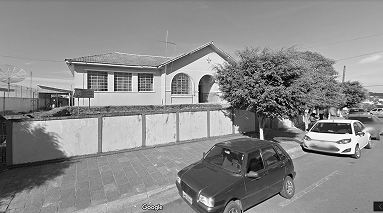

Estadual professora Helena Ronkoski Fioravante

A escola foi originalmente inaugurada entre 1945 e 1951 com o nome Grupo Escolar Cel. Rogério Borba, construída sob projeto da Secretaria de Viação e Obras Públicas em 1948, adotando estilo arquitetônico neocolonial com tipologia em “U”. Posteriormente, recebeu o nome de Colégio Estadual Professora Helena Ronkoski Fioravante, em homenagem à professora Helena Ronkoski Fioravante, eleita pela comunidade escolar. https://reservanews.com.br/
É uma unidade com ensino fundamental (anos finais) e ensino médio, localizada no centro de Reserva, Avenida Coronel Rogério Borba, 945. Segundo dados do Censo Escolar (INEP), possui cerca de 693 alunos, 36 professores, 22 turmas.
Em novembro de 2019, foi inaugurado o projeto inovador “Geloteca”, uma geladeira transformada em pequena biblioteca comunitária, onde os alunos podem livremente pegar, ler e trocar livros, fomentando a leitura de forma colaborativa e lúdica. Em 2020, o muro da escola foi revitalizado com um grafite artístico, no qual o artista Régis Martins pintou clássicos da literatura mundial com fundo abstrato, valorizando ainda mais o patrimônio histórico e cultural da instituição. https://tribunadanoticia.com.br/
Professores de Língua Portuguesa da resceberam prêmios no Concurso Agrinho por promoverem redações voltadas a temas como agricultura familiar, meio ambiente e cidadania, demonstrando excelência no ensino e responsabilidade social.
A escola também participa ativamente dos Jogos Estudantis, destacando-se em futsal e futebol em eventos municipais e regionais. https://tribunadanoticia.com.br/
